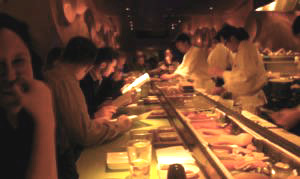

Tuesday, 23 November 2003
If you're on the east side of Cleveland and want a nice warm caffeinated place to get online, the new Arabica on Lee Road, just a block or so south of Cedar-Lee, is the place to be. The network SSID is 2WIRE173; it is a closed network but they'll tell you the password at the counter. Note to Mac users: you'll need to enter the password as a 40-bit hex key, not as a plain password. Something about their security setup causes this, although neither I nor they knew exactly what that might be. I figure it's no big deal, since once you enter the information and add it to your Keychain, you'll never have to worry about it again (unless of course they change it).
Wednesday, 26 November 2003
Wow.
Kat and I have just returned from Morimoto, where we had one of the most amazing meals of our entire lives. Although we'd been seated at a table to start, Kat decided (and rightly so) that we should move to the sushi bar.

So with a little help from the hostess, we moved to sit at the end of the bar, just a few feet from Morimoto himself, and after a bit of debate we decided to start out with the seared kobe beef and green tea soba noodles. These were by themselves amazing, but they were just the beginning. From there, we moved into the omakase, or chef's tasting menu. The best part of this was that we were seated right in front of the chef who was creating our meal, a sushi chef by the name of Alex, so we could ask questions and make requests while he prepared our courses. And what did we have?
- Toro tartare (one of the restaurant's signature dishes)
- Japanese oysters on the half-shell with four different sauces
- Seared scallop
- Sashimi salad of striped jack
- Mango sorbet with tiny wasabi beigniets
- Grilled half lobster in ginger sauce and rice noodles
- Grilled kobe beef with pan-seared foie gras
- Nigiri sushi including toro (fatty tuna), kanpachi (juvenile yellowtail), sawari (kingfish), Japanese tai (red snapper), needlefish, fluke, and fluke fin
- Chocolate temple dessert
It's difficult to even imagine being able to come up with the words to describe how good everything was. The whole time, Alex graciously answered our every question of "Ooo! What's that?" and "How is that made?" and "How do you get a meal prepared by Morimoto himself?" He didn't even take that last question personally; I'm sure he gets it all the time. From our perch we got to watch Morimoto make mini-sushi, which we're told is all the rage now in Japan. Each little piece was maybe a centimeter long. Not only did we think they were too cute for words, so did most of the staff. We saw one waitress run after the server calling, "Wait, let me see, let me see!"
It was, in every sense, an incredible experience. If we ever do make it back to Morimoto, we'll not only try the omakase again, but we'll ask to sit at Alex's station on the sushi bar.
{kind=link}